Santander +fácil
Plataforma de incentivo para os colaboradores do Santander, focada na venda de seguros e previdência.
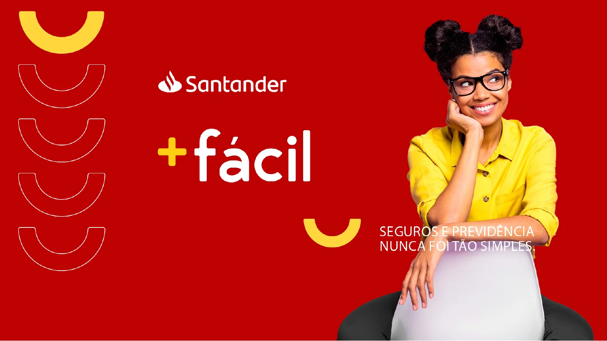
Objetivo
Mais acessos à plataforma de incentivo.
O objetivo era aumentar o número de acessos à plataforma de incentivo dos colaboradores do Santander, focada na venda de seguros.
São duas plataformas: a de administração, usada pelos gestores, e a do colaborador, usada pelos consultores de seguros bancários.
Processo
Da concorrência ao teste com usuários
- 01
Benchmark
Análise de plataformas de campanhas de incentivo e de bancos que têm campanhas desse tipo.
- 02
Workshop
Brainstorm com as áreas de Produto, Negócios e Tecnologia para definir os próximos passos.
- 03
Interface
Acompanhamento do alcance de meta pelos gestores e metas com treinamentos e quiz para os colaboradores.
- 04
Teste
Teste de usabilidade com 5 usuários e análise de cada entrevista.
Telas
Do objetivo às telas finais
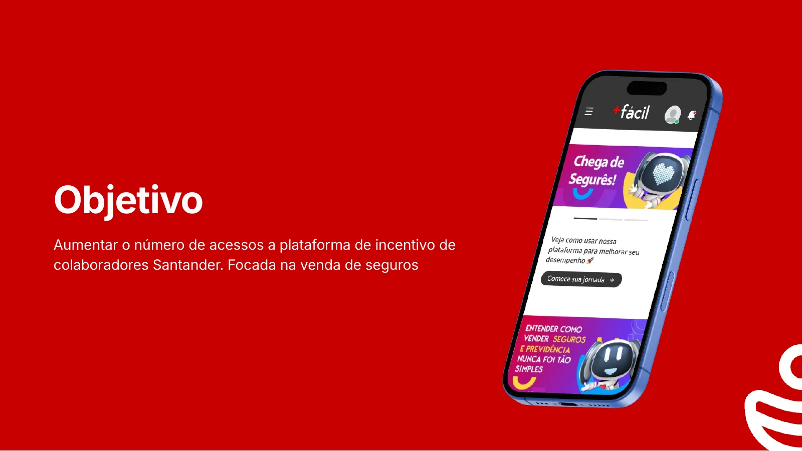
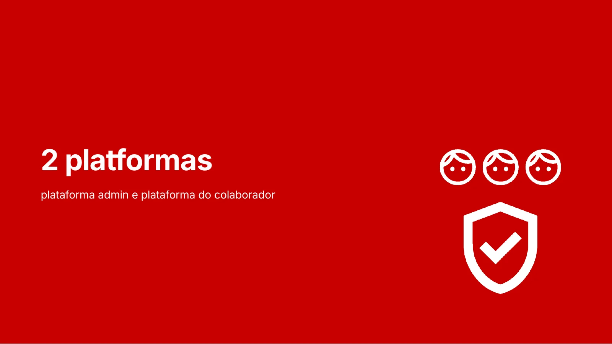
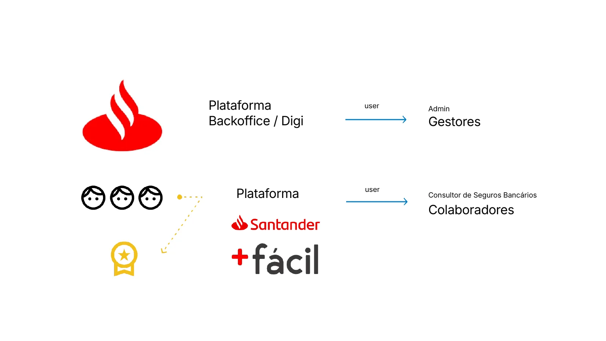
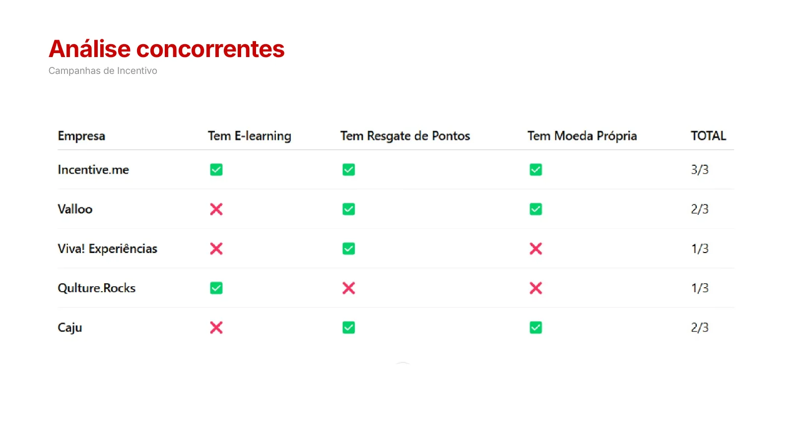
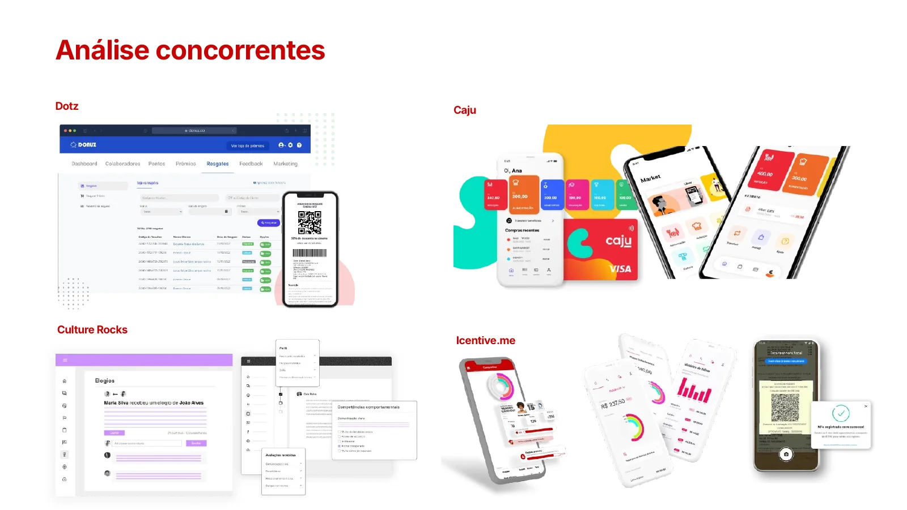
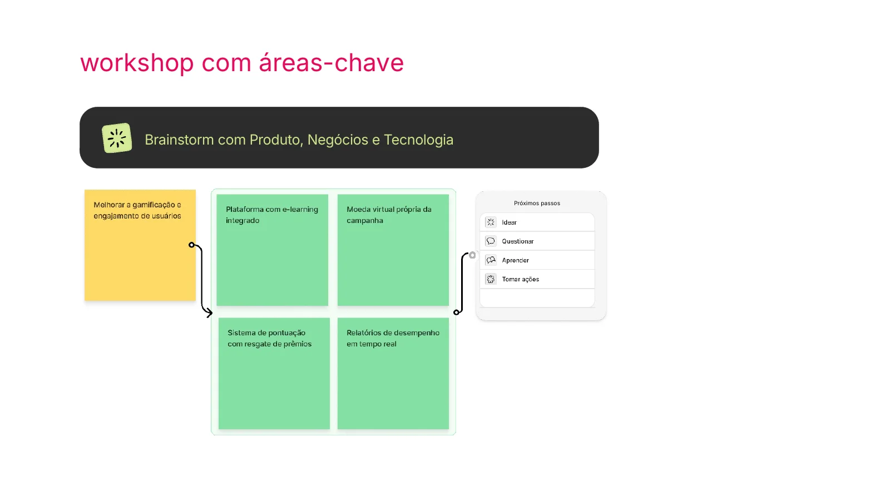
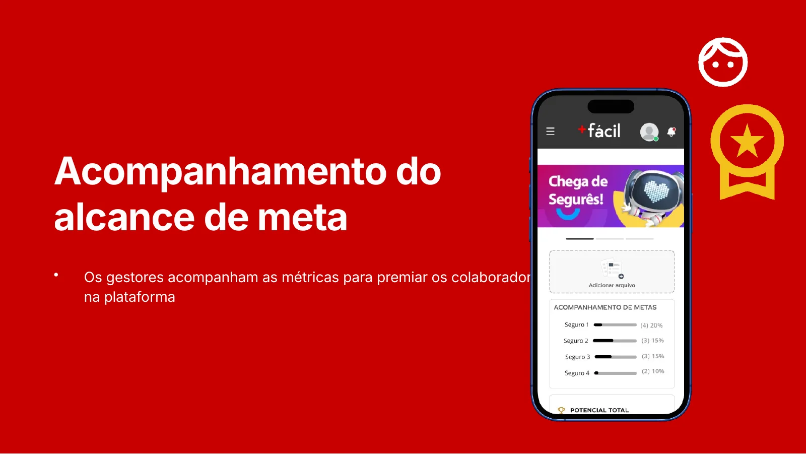
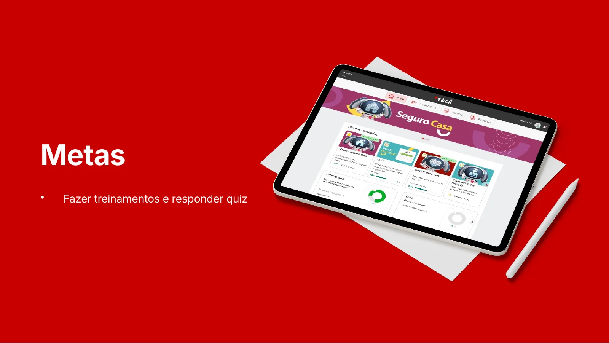
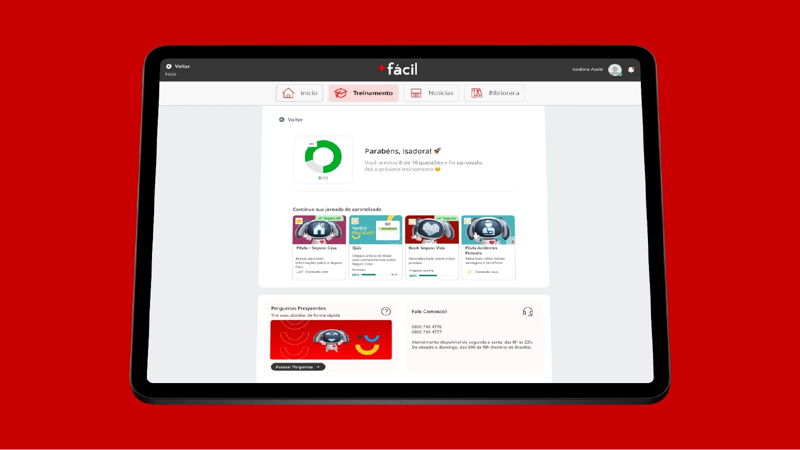
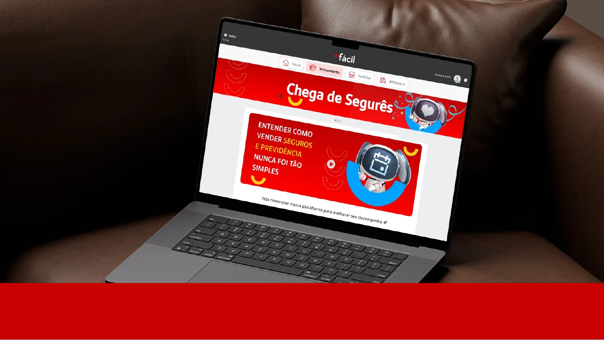
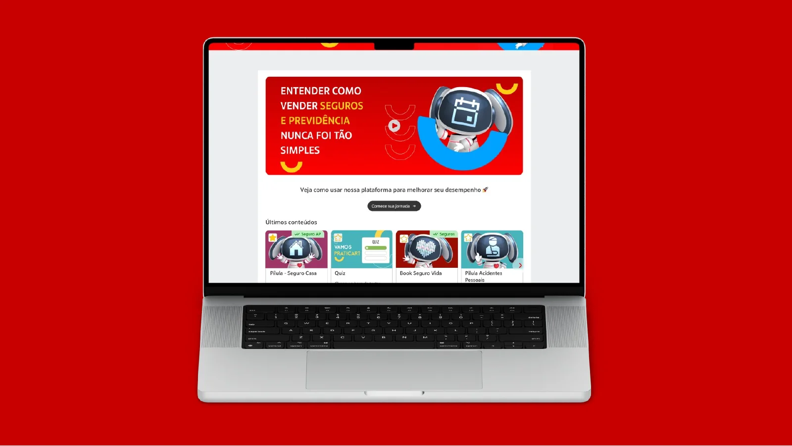
Entregas
Duas plataformas, uma jornada
- Benchmark
- Workshop
- Plataforma admin
- Plataforma do colaborador
- Metas e treinamentos
- Quiz
- Teste de usabilidade
Quer um projeto assim para o seu negócio?
Vamos conversar sobre o seu projeto.